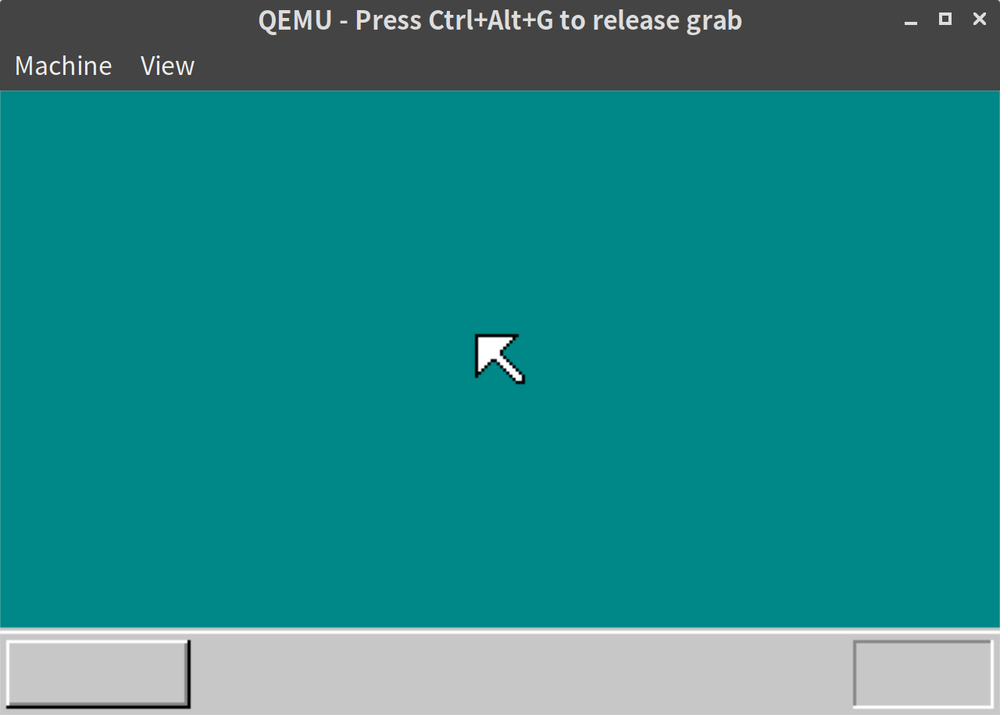
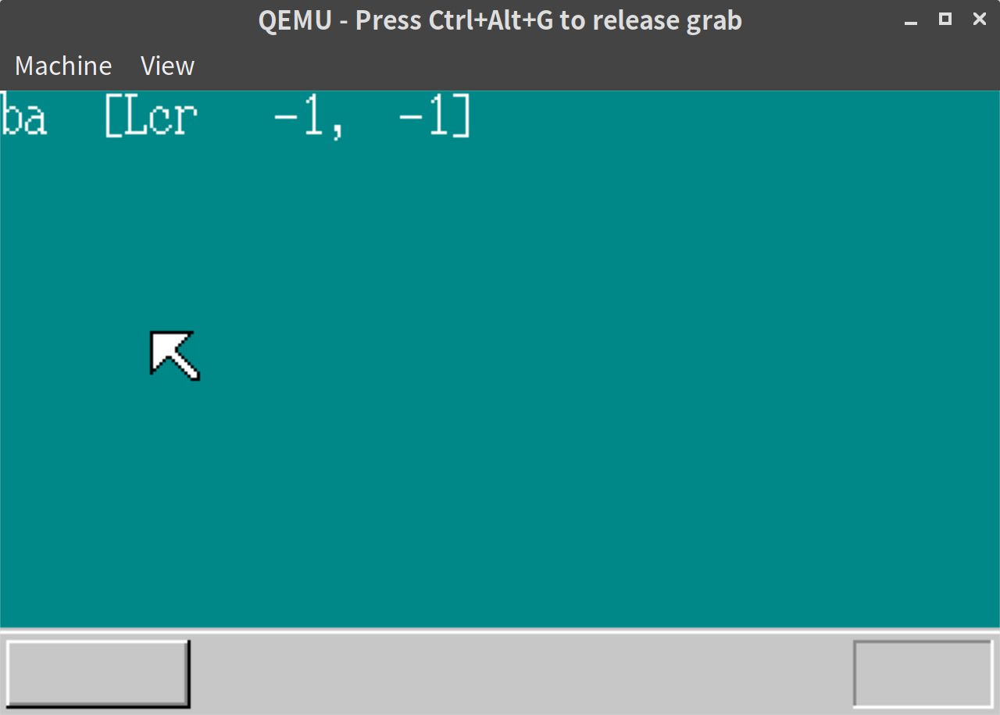

「30日でできる！OS自作入門」をRustで。8日目
Posted on 2019-06-19
「30日でできる！OS自作入門 」のC言語の部分をできるだけRustですすめてみる。今回は8日目の内容。
in8 のバグの修正
in8 が間違っていたので直す
// asm.rs
pub fn in8(port: u32) -> u8 {
let mut r: u8;
unsafe {
asm!("MOV EDX,$0" : : "i"(port) : : "intel");
asm!("MOV EAX,0" : : : : "intel");
asm!("IN AL,DX" : "={AL}"(r) : : : "intel"); // <- AXになってしまっており、ビット数が違った
}
r
}マウス入力を3バイトずつ読み出す
マウスの入力は3バイトずつにまとめて扱うようだ。
mouse.rs というファイルを追加し、まとめるためのstructを定義する。
// mouse.rs
use crate::vga::{Color, Screen};
use core::cell::{Cell, RefCell};
#[derive(Debug)]
pub struct MouseDec {
pub buf: RefCell<[u8; 3]>,
pub phase: Cell<MouseDecPhase>,
pub x: Cell<i32>,
pub y: Cell<i32>,
pub btn: Cell<i32>,
}
#[derive(Debug, Clone, Copy)]
pub enum MouseDecPhase {
START,
FIRST,
SECOND,
THIRD,
}
impl MouseDec {
pub fn new() -> MouseDec {
MouseDec {
buf: RefCell::new([0; 3]),
phase: Cell::new(MouseDecPhase::START),
x: Cell::new(0),
y: Cell::new(0),
btn: Cell::new(0),
}
}
pub fn decode(&self, data: u8) -> Option<()> {
use MouseDecPhase::*;
match self.phase.get() {
START => {
if data == 0xfa {
self.phase.set(FIRST)
}
None
}
FIRST => {
if (data & 0xc8) == 0x08 {
let mut buf = self.buf.borrow_mut();
buf[0] = data;
self.phase.set(SECOND);
}
None
}
SECOND => {
let mut buf = self.buf.borrow_mut();
buf[1] = data;
self.phase.set(THIRD);
None
}
THIRD => {
let mut buf = self.buf.borrow_mut();
buf[2] = data;
self.phase.set(FIRST);
self.btn.set((buf[0] & 0x07) as i32);
self.x.set(buf[1] as i32);
self.y.set(buf[2] as i32);
if (buf[0] & 0x10) != 0 {
self.x.set((buf[1] as u32 | 0xffffff00) as i32);
}
if (buf[0] & 0x20) != 0 {
self.y.set((buf[2] as u32 | 0xffffff00) as i32);
}
self.y.set(-self.y.get());
Some(())
}
}
}
}CのコードをRustに書き換えただけなので、あまり特筆するべきポイントはない。
Cell, RefCell の利用、関数呼び出しからstructのメソッド定義に変えたところ、くらいだろうか。
画面に表示する
画面に表示するため、まずはマウスの座標を保持するstructを作る。このstructに今まで vga.rs のほうにあったマウスまわりの処理もまとめることにする。
//mouse.rs
pub const MOUSE_CURSOR_WIDTH: usize = 16;
pub const MOUSE_CURSOR_HEIGHT: usize = 16;
#[derive(Debug)]
pub struct Mouse {
x: Cell<i32>,
y: Cell<i32>,
cursor: [[Color; MOUSE_CURSOR_WIDTH]; MOUSE_CURSOR_HEIGHT],
}
impl Mouse {
pub fn new(x: i32, y: i32) -> Mouse {
let cursor_icon: [[u8; MOUSE_CURSOR_WIDTH]; MOUSE_CURSOR_HEIGHT] = [
*b"**************..",
*b"*OOOOOOOOOOO*...",
*b"*OOOOOOOOOO*....",
*b"*OOOOOOOOO*.....",
*b"*OOOOOOOO*......",
*b"*OOOOOOO*.......",
*b"*OOOOOOO*.......",
*b"*OOOOOOOO*......",
*b"*OOOO**OOO*.....",
*b"*OOO*..*OOO*....",
*b"*OO*....*OOO*...",
*b"*O*......*OOO*..",
*b"**........*OOO*.",
*b"*..........*OOO*",
*b"............*OO*",
*b".............***",
];
let mut cursor: [[Color; MOUSE_CURSOR_WIDTH]; MOUSE_CURSOR_HEIGHT] =
[[Color::DarkCyan; MOUSE_CURSOR_WIDTH]; MOUSE_CURSOR_HEIGHT];
for y in 0..MOUSE_CURSOR_HEIGHT {
for x in 0..MOUSE_CURSOR_WIDTH {
match cursor_icon[y][x] {
b'*' => cursor[y][x] = Color::Black,
b'O' => cursor[y][x] = Color::White,
_ => (),
}
}
}
Mouse {
x: Cell::new(x),
y: Cell::new(y),
cursor,
}
}
pub fn move_and_render(&self, x: i32, y: i32) {
// まず消す
let mut screen = Screen::new();
screen.boxfill8(
Color::DarkCyan,
self.x.get() as isize,
self.y.get() as isize,
(self.x.get() + MOUSE_CURSOR_WIDTH as i32 - 1) as isize,
(self.y.get() + MOUSE_CURSOR_HEIGHT as i32 - 1) as isize,
);
// 移動
let mx = self.x.get() + x;
let my = self.y.get() + y;
let xmax = screen.scrnx as i32 - MOUSE_CURSOR_WIDTH as i32;
let ymax = screen.scrny as i32 - MOUSE_CURSOR_HEIGHT as i32;
if mx < 0 {
self.x.set(0);
} else if mx > xmax {
self.x.set(xmax);
} else {
self.x.set(mx);
}
if my < 0 {
self.y.set(0);
} else if my > ymax {
self.y.set(ymax);
} else {
self.y.set(my);
}
// 現在位置で描画
self.render();
}
pub fn render(&self) {
Screen::new().putblock(
self.cursor,
MOUSE_CURSOR_WIDTH as isize,
MOUSE_CURSOR_HEIGHT as isize,
self.x.get() as isize,
self.y.get() as isize,
);
}
}上記のMouse structを使って画面に描画する。
// lib.rs
#[no_mangle]
#[start]
pub extern "C" fn haribote_os() {
use asm::{cli, sti, stihlt};
use core::fmt::Write;
use interrupt::{enable_mouse, KEYBUF, MOUSEBUF};
use mouse::{Mouse, MouseDec, MOUSE_CURSOR_HEIGHT, MOUSE_CURSOR_WIDTH};
use vga::{Color, Screen, ScreenWriter};
descriptor_table::init();
interrupt::init();
sti();
interrupt::allow_input();
let mut screen = Screen::new();
screen.init();
// ここから追加
let mouse_dec = MouseDec::new();
let mouse = Mouse::new(
(screen.scrnx as i32 - MOUSE_CURSOR_WIDTH as i32) / 2,
(screen.scrny as i32 - MOUSE_CURSOR_HEIGHT as i32 - 28) / 2,
);
mouse.render();
// 追加ここまで
enable_mouse();
loop {
cli();
if KEYBUF.lock().status() != 0 {
let key = KEYBUF.lock().get().unwrap();
sti();
(Screen::new()).boxfill8(Color::DarkCyan, 0, 0, 16, 16);
let mut writer = ScreenWriter::new(Screen::new(), vga::Color::White, 0, 0);
write!(writer, "{:x}", key).unwrap();
} else if MOUSEBUF.lock().status() != 0 {
// このブロックを変更: マウスの座標のテキスト表示とカーソルの表示
let i = MOUSEBUF.lock().get().unwrap();
sti();
if mouse_dec.decode(i).is_some() {
(Screen::new()).boxfill8(Color::DarkCyan, 32, 0, 32 + 15 * 8 - 1, 16);
let mut writer = ScreenWriter::new(Screen::new(), vga::Color::White, 32, 0);
write!(
writer,
"[{}{}{} {:>4},{:>4}]",
if (mouse_dec.btn.get() & 0x01) != 0 {
'L' // 左クリック
} else {
'l'
},
if (mouse_dec.btn.get() & 0x04) != 0 {
'C' // 中央クリック
} else {
'c'
},
if (mouse_dec.btn.get() & 0x02) != 0 {
'R' // 右クリック
} else {
'r'
},
mouse_dec.x.get(),
mouse_dec.y.get(),
)
.unwrap();
mouse.move_and_render(mouse_dec.x.get(), mouse_dec.y.get());
}
} else {
stihlt();
}
}
}マウス入力実行結果
以下の通り、マウスカーソル移動と、座標、クリックの表示ができていることがわかる。
(Peekでgifスナップショットをとろうとしたが、どうしてもマウスの操作が使えなかったので、スクリーンショットを貼る。)


メモリマップ
本では本章の後半、32bitモードにはいるための初期化処理について説明されている。
このあたりの内容についてはこのブログ記事が非常にわかりやすい。
8日目は以上となる。ここまでの内容のコードはyoshitsugu/hariboteos_in_rustのday8としてタグを打ってある。